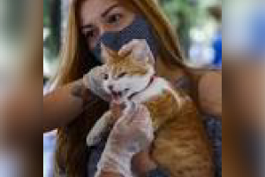
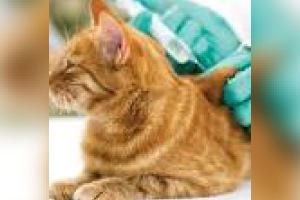
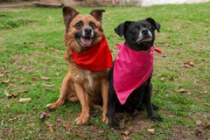

Así será la segunda jornada de vacunación contra la rabia para perros y gatos en Antioquia
Los animales deben ser llevados por un adulto responsable. No deben ser mayores de 70 años, ni deben asistir niños. Los puestos de vacunación estarán en los parques principales de cada municipio de Antioquia. FOTO: MANUEL SALDARRIAGA
Leer noticia completaEn Neiva, campaña antiaftosa incluirá vacunación contra la rabia silvestre
El hato bovino y bufalino de Neiva deberá vacunarse contra esta enfermedad de manera simultánea en el segundo ciclo de vacunación contra la fiebre aftosa y brucelosis bovina.
Leer noticia completa

MinSalud lanza campaña de vacunación contra la rabia para perros y gatos
Autoridades sanitarias hacen un llamado a vacunar anualmente a perros y gatos contra la rabia, una enfermedad mortal para los animales y las personas.
Leer noticia completa

Adopte una mascota: regresan las jornadas presenciales
Serán entre el miércoles 25 y el domingo 29 de noviembre. Conozca los detalles.
Leer noticia completa